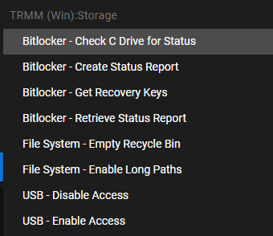

Community Scripts¶
Script Library Naming Conventions¶
File names¶
Under /scripts the file name should generally follow this format:
(Platform)_(Category or Function)_(What It Does).xxx
Info
Although Tactical RMM only has a Windows agent for now, we're planning for a future with more platform support
Platform for now are:
Win
OSX
Linux
iOS
Android
Good filename examples include:
Win_Azure_Mars_Cloud_Backup_Status.ps1
Win_AzureAD_Check_Connection_Status.ps1
Win_Network_DHCP_Set.bat
Win_Network_DNS_Set_to_1.1.1.2.ps1
Info
This is so that at a glance you can see if there is already a script with that function, and you can avoid duplication of functionality. If you can improve a script or allow Script Arguments/Parameters update existing if possible
Name field (in community_scripts.json)¶
Consider they are viewed in 3 different locations:
Script Manager
-
List View (sortable by any column)
-
Folder View (Grouped by Categories)
Run or Add script
- Running scripts manually or adding tasks (or adding in Automation Manager)
Info
A good max length is 50-60 chars or less for display in these 3 locations
Make sure your Name roughly follows the order of file naming as above
Category or Function - What It Does
Consider how the alphabetic sort will affect display

json field names¶
Example
{
"guid": "bfd61545-839b-45da-8b3d-75ffc4d43272",
"filename": "Win_Sophos_EndpointProtection_Install.ps1",
"submittedBy": "https://github.com/bc24fl/",
"name": "Sophos Endpoint Protection Install",
"description": "Installs Sophos Endpoint Protection via the Sophos API. Products include Antivirus, InterceptX, MDR, Device Encryption. The script requires API credentials, Custom Fields, and Arguments passed to script. See script comments for details",
"args": [
"-ClientId {{client.SophosClientId}}",
"-ClientSecret {{client.SophosClientSecret}}",
"-TenantName {{client.SophosTenantName}}",
"-Products antivirus,intercept"
],
"default_timeout": "3600",
"supported_platforms": ["windows"],
"shell": "powershell",
"category": "TRMM (Win):3rd Party Software"
},
Notes
guid: Must be unique in the file
filename: File with that name must exist in /scripts folder
submittedBy: Get credit for creator
args: default args pre-filled in arg field
default_timeout: Sets the default timeout for the script
supported_platforms: ["windows", "linux", "darwin"] (case sensitive, if missing, assumes all platforms are supported). darwin=MacOS
shell: can be powershell, cmd, python, bash
syntax: See scripting
category: Preferably use existing categories and format structure for library sorting, add new as needed
Making Script Files¶
Good Habits¶
-
Try and make them fully self-contained.
-
If they pull data from elsewhere, create comment notes at the top with references for others to audit/validate
-
Good folder locations to use for standardized things:
c:\ProgramData\TacticalRMM\
c:\ProgramData\TacticalRMM\scripts
c:\ProgramData\TacticalRMM\toolbox
c:\ProgramData\TacticalRMM\logs
c:\ProgramData\TacticalRMM\temp
c:\ProgramData\TacticalRMM\
-
Command Parameters are good. Optional command parameters for extra functions are better.
-
Add standardized Comment headers to scripts (include the first 2, more if appropriate):
<#
.Synopsis
Short description
eg Check IP address
.DESCRIPTION
Long description
eg Checks IP address on all local network adapters, and returns results
.EXAMPLE
Example of how to use this cmdlet
.EXAMPLE
Another example of how to use this cmdlet
.INPUTS
Inputs to this cmdlet (if any)
.OUTPUTS
Output from this cmdlet (if any)
.NOTES
General notes
eg v1.0
.COMPONENT
The component this cmdlet belongs to
.ROLE
The role this cmdlet belongs to
.FUNCTIONALITY
The functionality that best describes this cmdlet
#>
Bad Habits¶
-
Assumes non-standard configurations
-
Doesn't play well with other community scripts (reused names etc.)
Script Parameters¶
Useful Reference Script Examples¶
RunAsUser (since Tactical RMM runs as system) https://github.com/amidaware/community-scripts/blob/main/scripts/Win_Display_Message_To_User.ps1
Command Parameter Ninja https://github.com/amidaware/community-scripts/blob/main/scripts/Win_ScreenConnectAIO.ps1
Optional Command Parameters and testing for errors https://github.com/amidaware/community-scripts/blob/main/scripts/Win_Computer_Rename.ps1
Volunteers Needed¶
If you want to contribute back to the project there are a lot of scripts that need some TLC (Tender Loving Care) please peruse thru them in The Script WIP (Work In Progress): https://github.com/amidaware/community-scripts/tree/main/scripts_wip
Discuss/ask questions in the Discord group here
What you can add is:
- Add standardized Comment headers per above
- Parameterize scripts where appropriate
- Add $ExitCode and error conditions as appropriate
- Contact @silversword in Discord if you need help doing Github additions/edits/adding to the community Library and have questions about Script Library Naming Conventions